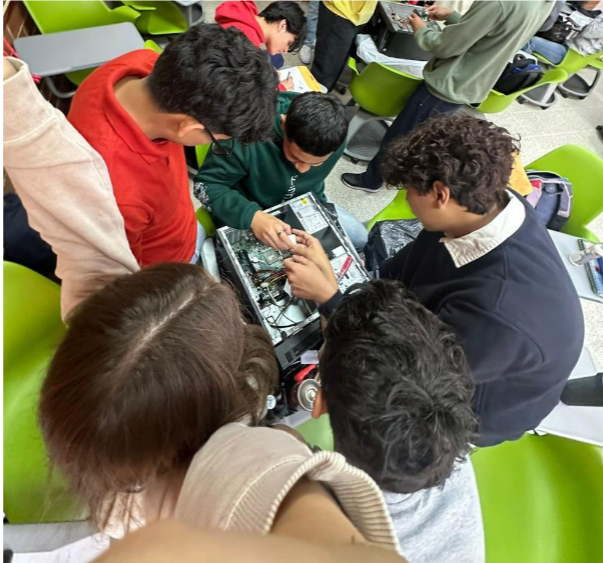
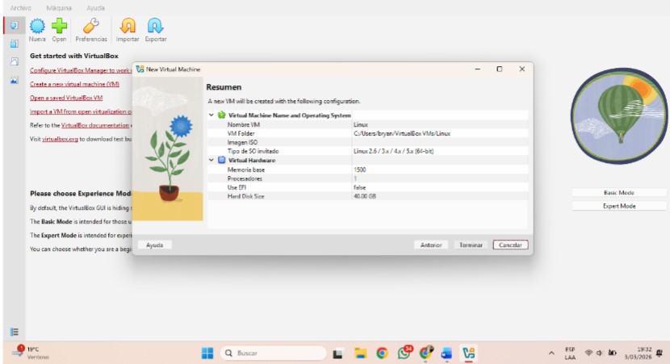
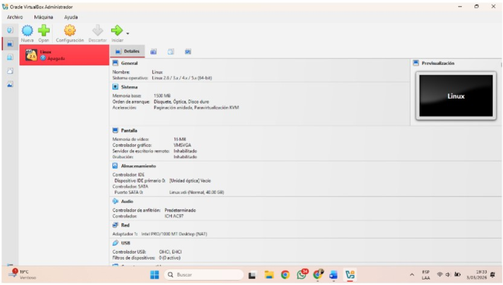
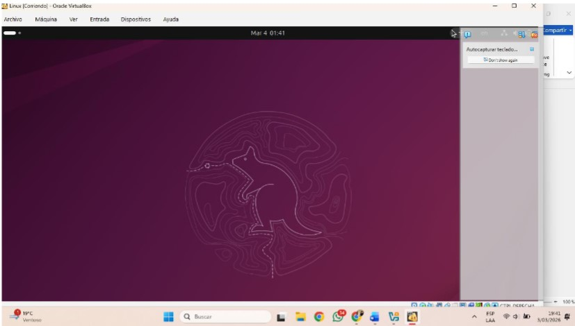
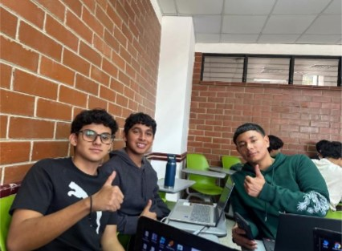
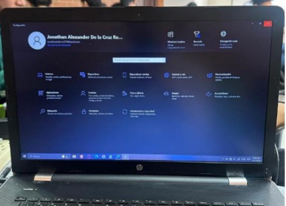
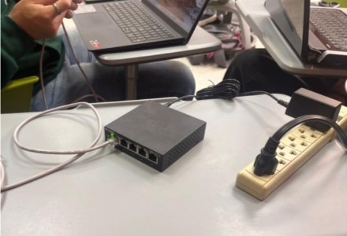
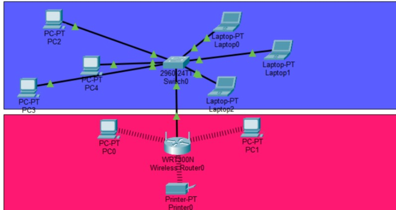
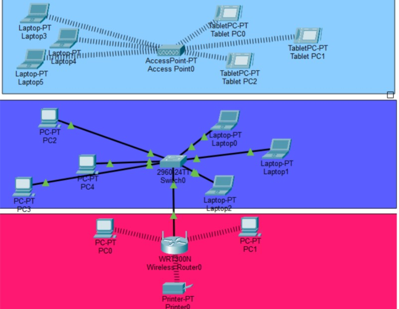
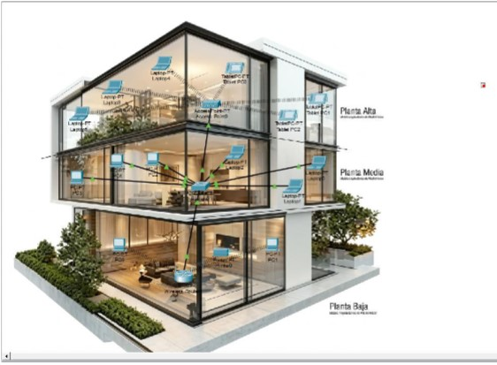

Proyecto 1 - Limpieza de un case de computadora
Proyecto grupal enfocado en la limpieza interna de un case de computadora, identificando e investigando cada uno de sus componentes internos. Posteriormente se elaboró un informe detallado sobre el proceso realizado.
Imágenes



Video
Proyecto 2 - Instalación de Ubuntu/Linux
Proyecto individual basado en la instalación del sistema operativo Ubuntu/Linux. El proceso fue documentado mediante aproximadamente 15 capturas de pantalla y posteriormente se ejecutaron comandos básicos. Finalmente se elaboró un video explicativo del procedimiento.
Imágenes



Video
Proyecto 3 - Elaboración de cables de red
Proyecto individual enfocado en la elaboración de cables de red tipo A y tipo B mediante el proceso de crimpado, junto con la documentación correspondiente.
Imágenes


Video
Proyecto 4 - Configuración de red LAN
Proyecto grupal donde se configuró una red LAN conectando tres computadoras mediante un switch, asignando direcciones IP estáticas y habilitando el intercambio de archivos.
Imágenes



Video
Proyecto 5 - Diseño de red LAN en Cisco Packet Tracer
Proyecto individual orientado al diseño de una red LAN utilizando Cisco Packet Tracer, simulando una casa de tres niveles con diferentes tipos de conexión en cada área. El proyecto fue presentado mediante un video explicativo.
Imágenes



Video
Proyecto 6 - Desarrollo de base de datos
Proyecto individual enfocado en el desarrollo de una base de datos, incluyendo la creación del diagrama entidad-relación en Workbench, generación del script de base de datos, creación de tablas en PHPMyAdmin y la inserción de registros en distintos casos.
- Creación de diagrama entidad-relación (ER) en Workbench
- Generación de script de base de datos
- Creación de base de datos y tablas en PHPMyAdmin
- Visualización del diagrama ER
- Inserción de registros en las tablas
Imágenes